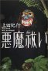
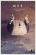

31 30 | 29 27 26 25 24 23
| 21 20 19 17 16 | 15 13 12
| 8 2 | 1
31-7 (dinsdag)
30-7 (maandag)
-
「フェルマーの最終定理」 (
bk1)の
サイモン・シン の新作「暗号解読」 (
bk1) が出たらしい
-
[phys]論文2000/4-1 = JFM 論文
-
タンザニアの友人が一時帰国(タンザニアに)
- 6-5に知り合った彼
-
連絡が着かないので家で荷作りしているのだろうと、
直接行ったら好運にも会えた
- 飛行機はここを 10
時に発って、着くのが夜の 11 時頃
(途中、観光客が多いのでキリマンジャロに止まるらしい)
- 来年の 3 月にまた会おう、と約束
29-7 (zondag)
-
日本の本、CD を衝動買いする @amazon.co.jp
- 本 5 冊、CD 2 枚、 計 20,263
円 (うち、送料が 3,550 円)
- 送料の内訳は、 1,450 円 per delivery
(国際エコノミー便、3~4週間掛かるらしい)、
300 per item、 まあこんなものか
27-7 (vrijdag)
-
[phys]論文2000/4-1 =
JFM 論文
- howard stone の secretary から
acknowledgement が届く
- 「直接 JFM office に送る」そうだ
26-7 (donterdag)
-
[phys]論文2000/4-1 = JFM 論文
- howard stone に e-mail を出しておく
-
自宅で船便の未整理箱を開けていて、
「統計物理学とともに:
1957年-1970年」川崎恭治 ( 固体物理
Vol.31 No.2 1996) の copy を発見
-
「人々は臨界現象に何か未知の神秘的なものを感じロマンに満ちた
よい時代であった。くりこみ群によって本質が分かってしまえばあとは
計算に強い秀才たちの天下で、そこにはもうロマンは求むべくもない。」
-
ロマンが原動力になるのだが、それを無力化することがその目標か、
科学とは
25-7 (woensdag)
-
[phys]論文2000/4-1 =
JFM 論文
-
最終改訂、その５
- 最終稿を読み、cover letter
を書いてて、 どんどん修正部分が出る Rev
3.6 ~ 3.9 まで
- cover letter を仕上げ、印刷
- 郵便局(enschede の中央)で TNT
で発送(87,50 f)、 金曜に着くらしい
-
ふと振り返ると、投稿したのはほとんど一年前 (29-7-2000)
-
書き始めは 6-8-1999 (Rev
1.1)、 ながぁく掛かったものだ
- ちなみに TeX source の filename
はずぅ〜っと 199908-fmm.tex、
改訂中も意識せざるを得なかった。2年か
-
JFM
の editorial process
はどんなものか知らないけど、
あとどれくらい掛かるのだろうか……
- accept はされている(23-4-2001)
- 今は editor である howard stone
の改訂要求に答え終った所
-
「 物性研究
」の
原稿 (cf.23-4)
にはこの論文の status を「in
press」としたが、 何か違うな。
-
縲径ccepted縲阪→縺吶∋縺阪〒縺ゅ▲縺溘°?
この acceptedという status
は一般的か? (accepted = in press
と思っていたが)
- すると順序は、 in preparation ->
submitted -> accepted -> in press
かな?
24-7 (dinsdag)
-
[phys]論文2000/4-1 = JFM 論文
23-7 (maandag)
-
夏場所のまとめ
- 北桜は9敗で踏みとどまった。幕に残れるかな
-
弟
豊桜は2敗で、残念ながら優勝はできなかったか。
しかし来場所は十両復帰だな
- 優勝
した五城楼って、こんな所(東22枚目)まで落ちてたのか
- 安芸乃島は、もうダメダメだな……
-
図書館から借りた図書、on-line
で簡単に貸し出しの延長が出来ることに感動
-
自宅にて [phys]論文2000/4-1 = JFM 論文
21-7 (zaterdag)
-
久しぶりに実家に電話、 去年の12月11日応募の
昨年度第22戦(通算49戦目)のダメが、今ごろになって実家に届いたらしい
20-7 (vrijdag)
-
山下邦彦とユングに類似性を認識
-
ともに彼らにとって大事な「何か」を引き出そうと、もがいている、
という類似性
-
所詮は解釈や抽出である
(そんなものに頼らず、その「何か」で作った何かを見たい)という気持ちと、
ネタとなったそのテキストに直接当たって見たいという気持ちを、
自分に感じる
19-7 (donterdag)
17-7 (dinsdag)
-
復帰
- と思ったら、detlef も gerrit
も休暇で、すごく静か
-
北桜が十両優勝したのがつい この間
だと思っていたら、あっと言う間に 夏場所、
既に後半戦であった…
- 北桜は前頭九枚目、
現在崖っ淵の 7 敗ではないか、頑張れ
- 安芸乃島は前頭六枚目で、6
敗か、
二人の取り組みを生で見たかったなぁ
- 弟
豊桜は、幕下西の九枚目まで落ちてしまったか。
しかし実力はやはりあるようで、全勝の5勝。優勝してしまえ
16-7 (maandag)
15-7 (zondag)
13-7 (vrijdag)
12-7 (donterdag)
-
「悪魔ばらい」(上田紀行) ISBN 4-06-256457-2 (
bk1,
amazon.co.jp) 読了 
- 以前 amazon.co.jp
で買ったまま読む機会がなかったもの
-
前半のドキュメンタリー部分が、大変おもしろい
-
あと、文化人類学者というものの自己批判的な記述が興味深い
-
後半の理屈付けは、ちょっと dull
かった(個人的にはいらなかった)
-
多分著者が中盤で(スリランカで)感じていた気持ちに矛盾している気がする
-
しかし、彼なりの「オチ」は付けなければならなかったのだろう
- もともと 1990
年の本、10年以上残ることはそれ自身「何か(わくわく?)」を
もっていることの証か
-
彼の心酔したと言うゴーミス師の生の言葉を、できるだけたくさん聞きたかった
8-7 (zondag)
- 自宅にて
-
[phys]論文2000/4-1 = JFM 論文
- 26-6以来
-
最終改訂、その２
- 細かい所、 howard stone
の改訂を打込み終了、 Rev 3.3
2-7 (maandag)
-
今週一週間、休暇を申請する
-
何ておおげさなものではなく、単に「休みをとるよ」と言うだけだが
- オランダは有給のシステムがはっきりしていて、
かつ皆きちんと休みを取るので、
それに従う
-
…前に、貸し出し期限を切れた書籍を返却しておく
-
Home Girl Journey の 「さようなら」が、今の
my favorate
- original の DiVa
の演奏を、聞いてみたいような、聞きたくないような
- 谷川俊太郎、 谷川賢作
両氏は親子
1-7 (zondag)
- 大学に顔を出す。 当然、だぁれも居ない
-
警察から24-4-2001の返事が
やっと届く
- 出頭しなければならないかと思ったが、 後日
gerrit に聞いてみると(書類がオランダ語)
必要な書類を郵送すればいいらしい
-
ベルンハルト・シュリンク「朗読者」(ISBN
4-10-590018-8,
amazon.co.jp,
bk1) 読了 
- 徐々に開けている船便荷物、その 26
に入っていた本の一冊
- コンパクトな、上質な、お話し
-
その箱に入っていた岡本太郎も、ぱらぱらと読み返す
(cf. 13-10-2001,
1-10-2001)
-
今日は campus
で(ということは、家の近くで) sting の
concert があった
- 前座が 2.30 pm からあって、 sting
は 8.00 pm
から(と、ポスターにあった)。
- らしい声が、遠くから響いていた
31 30 |
29 27 26 25 24 23
|
21 20 19 17 16 |
15 13 12
|
8 2 |
1
 2001年7月
2001年7月{kind=link}
{kind=link}